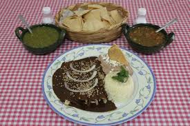
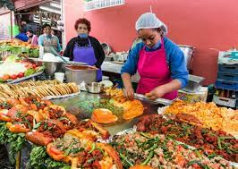
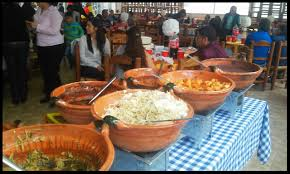

Aspectos sociales y culturales
Cocina casera

El acto de cocinar en México es considerado una de las actividades más importantes de la vida diaria. En la mayor parte del país, especialmente en las zonas rurales, los alimentos se consume en el hogar tomando como base los ingredientes locales.
La gastronomía mexicana siempre ha sido calificada como una cocina de gran influencia barroca, resultado de un mestizaje culinario, representando la visión que los mexicanos tienen del mundo. De esta forma, la región del norte de México es de clima más seco, ofrece una cocina más bien austera, de sabores sencillos, fuertemente basada en la recolección y el mestizaje, pero que destaca por el nivel de endemismos florísticos. En cambio, en el sureste y otras zonas tropicales, se da una amplia diversidad de sabores con una cantidad hasta ahora desconocida de platillos y recetarios locales.
En México se acostumbra hacer tres comidas al día: el “desayuno”, la “comida” y la “cena”, si bien al tratarse del país industrializado donde la gente más labora, esto ha ido cambiando y ahora cada familia aplica un horario acorde a sus necesidades. En término medio, el «desayuno» se hace entre las 7 y 10 de la mañana, la «comida» entre las dos y tres de la tarde, y la cena después de las 8 de la noche. El «desayuno» suele ser algo más abundante que en otros países y varía según la región, desde los huevos preparados de distintas formas, solos o acompañados con frijoles, chilaquiles, tortas y quesadillas, hasta platillos más complejos hechos con carne o guisos y generalmente como bebida jugos, leche, o café. La comida principal es la comida y suele involucrar el platillo más elaborado del día, generalmente acompañada de aguas frescas o bebidas regionales, aunque los refrescos han ganado terreno los últimos años. La «cena» varía de acuerdo a costumbres personales desde una comida sencilla acompañada de pan dulce, café, té, chocolate o bebidas regionales, hasta platillos también complejos o algún recalentado. En México el «almuerzo» es el alimento ligero que algunos consumen antes del mediodía, generalmente entre las diez y las doce o después del desayuno, si bien puede resultar confuso ya que si la persona retrasa el desayuno suele llamarle almuerzo o incluso en algunas regiones a cualquier desayuno se le llama así, mientras que la «merienda» es el alimento ligero entre la comida y la cena, o aquella cena que se suele hacer más temprano de lo habitual.
Comida callejera y restaurantes

La profesionalización del trabajo culinario en México es una virtud ampliamente valorada por la sociedad, rindiéndole a aquel que la práctica una jerarquía especial. Salvo excepciones, como las del "taquero", este dominio sigue siendo predominantemente femenino: es común ver al frente de las cocinas de restaurantes y fondas a mujeres que, al adquirir el grado de excelencia, son nombradas "mayoras", denominación que en el Virreinato se le daba a las jefas de las cocinas de las haciendas y que ahora sería equivalente al chef europeo. En efecto, múltiples autores han calificado la cocina mexicana, como una cocina matriarcal.
La comida callejera es muy variada, y va desde los antojitos hasta cualquier tipo de cocina tradicional. Se come igual porciones pequeñas o medianas que funcionan como el "tentempié" mexicano y pueden ser consumidas en pocos minutos, hasta comidas completas o tan complejas que solo pueden ser consumidas ahí. Destacan los tacos de cualquier tipo que los mexicanos no solo clasifican por el contenido, sino por la tortilla, la región y el modo de preparación (al pastor, de bistec, de arrachera, de adobada, de chorizo, de longaniza, de "cabeza", de lengua, de lechón, de canasta o sudados, dorados, ahogados, de carnitas, placeros, de barbacoa, de suadero, de cecina, de pepena, de pescado, de langosta, laguneros, potosinos, de chicharrón, mineros, de escamoles, de chapulines, de jumiles, de pito, de coetlas, de fritada de cabrito, de pejelagarto, de nata, codzitos o de nada y una interminable lista), quesadillas, pambazos, tamales, huaraches, sopes, tortas y cemitas. Desde finales del siglo xx, la influencia de la comida rápida estadounidense se ha dejado ver en la comida de muchos puestos de la calle, que ofrecen hamburguesas y perros calientes.
Uno de los atractivos de la comida callejera es la satisfacción del hambre o el antojo espontáneo sin toda la connotación social y emocional de comer en casa, y claramente también influenciado por la carga laboral común del mexicano, que desea seguir comiendo platillos complejos de la gastronomía mexicana sin contar con el tiempo para prepararlos. Aunque los clientes a largo plazo suelen generar una relación de amistad con un vendedor elegido.
En las zonas urbanas, debido a la integración de las mujeres a la fuerza laboral y a la influencia del estilo de vida occidental (principalmente de los Estados Unidos), se ha ido perdiendo la tradición de cocinar en casa. Sin embargo, se considera que las fondas (una versión mexicana de los bistró franceses, lugares donde comer fuera a mediodía de forma económica) son un reservo urbano de las recetas tradicionales.
Festividades y rituales

La cocina en México tambiéén cumple funciones rituales y festivas determinantes, tales como la instalación del altar de muertos o la fiesta de quince años. La comida suele representar claramente la estructura social del país.
Una de las características de la gastronomía mexicana es que aunque hace distinción entre la cocina cotidiana y la alta cocina, estos pueden consumirse en cualquier momento y ser adecuado. Así, aunque existen platillos típicos festivos como el mole o los tamales, estos pueden consumirse cualquier día del año si así se desea, lo mismo en una casa particular que en un restaurante lujoso o en una pequeña fonda sin un valor ritual especial; y a la vez darle ese valor ritual cuando se requiera.
Para la fiesta del Día de Muertos, platillos festivos se ponen en altares y se cree que los parientes muertos que los visitan comen la esencia de la comida, y si esta es ingerida por las familias más tarde, ha perdido el sabor. Cualquier festividad o ceremonia como una boda, la fiesta de quince años, fiestas o reuniones familiares suele ser un pretexto para la preparación de platillos tradicionales, que incluyen mole, barbacoa, carnitas, mixiotes, birria o distintos platillos según la región. En ceremonias suelen estar preparados para alimentar a unos quinientos invitados, requiriendo grupos de cocineros profesionales o simplemente organizados por la familia. La cocina está fuertemente diseñada para vincular familias y comunidades.
Algunos platillos muy complejos suelen ser exclusivos de algunas épocas del año, por ejemplo en Navidad y los últimos días del año, la cena pasa a ser la comida más importante y varía desde platillos regionales más complejos (tamales con alguna distinción, pozole y otros platos), romeritos, pavo de Nochebuena o bacalao, acompañados de buñuelos y otros postres y dulces, se rompen piñatas rellenas de frutas y dulces, y como bebidas recetas más autóctonas, como ponche de frutas navideño, champurrado y atole. Este patrón de “celebrar lo tradicional” se repite en otras fiestas del año. Al tratarse de un país mayormente católico, los pueblos y comunidades suelen tener días y fiestas patronales, en los que se come de forma especial. Las ferias locales son otro ejemplo de festividad local, prácticamente cualquier población y ciudad celebra una, donde la gente da un lugar especial a la gastronomía.
Aún es muy frecuente que en México la gastronomía se adapte para celebrar la Cuaresma. Durante este período se elaboran platos con ingredientes sencillos y vegetales cotidianos como la papa, calabacita y flor de calabaza, camote, ejotes, chiles poblanos, aguacate, nopal y otros ingredientes y productos indígenas, aumenta el consumo de frijoles, lentejas, habas, garbanzos, huitlacoche, charales, sardinas, camarones y toda clase de pescados frescos o secos. Platillos como el pipián o las tortitas de camarón con nopales son propiamente típicos de estas fechas y puede ser más complicado encontrarlos durante el resto del año.
En últimos años se han vuelto frecuentes los festivales gastronómicos, que van desde lo local hasta ferias nacionales, entre las más reconocidas se encuentra:
Festival Internacional del Paste, la primera semana de octubre en Mineral del Monte, Hidalgo.
Feria de la Manzana de Zacatlán, la segunda mitad de agosto, en Zacatlán, Puebla.
Feria de las Fresas, la primera y segunda semana de marzo, en Irapuato, Guanajuato.
Feria del Alfeñique, entre octubre y noviembre, en Toluca.
Festival Internacional de la Cerveza, el segundo fin de semana de mayo, en Morelia, Michoacán.
Feria Internacional del Mole, 2-3 de mayo en Puebla.
Feria Nacional del Mole, mes de octubre, en San Pedro Atocpan, Ciudad de México.
Feria Nacional del Queso y el Vino, segunda quincena de mayo a inicios de junio, en Tequisquiapan, Querétaro.
Festival del Chile en Nogada, mes de agosto, en las ciudades principales de Puebla
Festival del Chocolate, la última semana de noviembre, en Villahermosa, Tabasco.
Festival del Queso Artesanal, mes de julio en Tenosique, Tabasco.
Sabor es Polanco, últimos días de marzo, Polanco, Ciudad de México.
Wine and Food Festival Cancún - Riviera Maya, variable entre marzo y abril, Riviera Maya.
Muestra Gastronómica de Santiago de Anaya, la primera fin de semana de abril en Santiago de Anaya, Hidalgo.